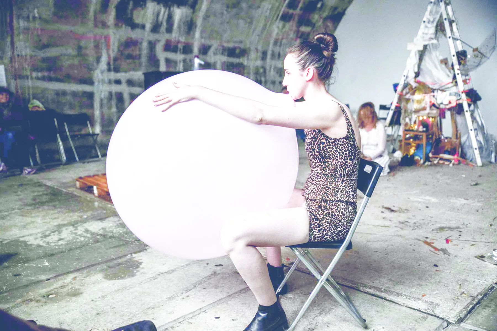

IRAKHARLAMOVA
ARTIST STATEMENT / DRAFT
Я працюю з тілом як із живим архівом — місцем, де особистий досвід, колективна пам’ять і соціальна напруга залишають фізичні сліди. Через перформанс я досліджую крихкість, витривалість і можливість трансформації.
PERFORMANCE · COLLABORATION · PHYSICAL THEATRE · LIVE ART
ВИБРАНІ
РОБОТИ
SELECTED WORKS
2017—2025

ВИБРАНЕ
CV
SELECTED PROJECTS

ABOUT / DRAFT BIO
ІРА ХАРЛАМОВА — АРТИСТКА ПЕРФОРМАНСУ, ЯКА ПРАЦЮЄ НА ПЕРЕТИНІ ТІЛЕСНОЇ ПРАКТИКИ, ПАМ’ЯТІ ТА КОЛЕКТИВНОЇ ДІЇ.
Її практика виростає з фізичного театру, live art і довготривалого дослідження тіла як носія досвіду. У роботах вона поєднує особисті жести, групову взаємодію та просторові ситуації.
Іра брала участь у міжнародних лабораторіях, фестивалях і проєктах в Україні, Німеччині та Польщі, зокрема в Lublin Performance Platform, XCHANGES, ZABIH, Black Market International Exploring та Shards of Normality.
REQUEST FULL CV ↗